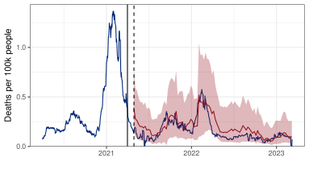
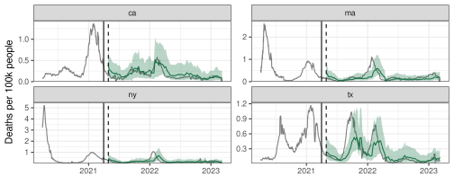

Forecasting With {epipredict}
MICOM Tooling Workshop 2025
David Weber, Nat DeFries
Adapted from slides by Alice Cima, Rachel Lobay, Daniel McDonald, Ryan Tibshirani, with huge thanks to Logan Brooks, Xueda Shen, and Dmitry Shemetov
12 August 2025
Outline
Overview of
{epipredict}Customizing
arx_forecaster()
1 Overview of {epipredict}
{epipredict}
https://cmu-delphi.github.io/epipredict
Installation
What {epipredict} provides (i)
Basic and easy to use “canned” forecasters. There are several “basline” forecasters:
Baseline flat forecaster
CDC FluSight flatline forecaster
Climatological model
As well as two flexible autoregressive forecasters:
Autoregressive classifier
Autoregressive forecaster (ARX)
What {epipredict} provides (ii)
A framework for creating custom forecasters out of modular components.
This is highly customizable, extends
{tidymodels}to panel dataGood for building a new forecaster from scratch
Used to construct
There are four types of components:
Preprocessor: do things to the data before model training
Trainer: train a model on data, resulting in a fitted model object
Predictor: make predictions, using a fitted model object
Postprocessor: do things to the predictions before returning
If you want examples of usage, see https://cmu-delphi.github.io/epipredict/articles/custom_epiworkflows.html
2 Preprocessing
Examples of pre-processing
Exploratory Data Analysis (EDA)
- Making locations/signals commensurate (scaling)
- Dealing with revisions
- Detecting and removing outliers
- Imputing or removing missing data
Feature engineering
- Creating lagged predictors
- Day of Week effects
- Rolling averages for smoothing
- Lagged differences
- Growth rates instead of raw signals
- The sky’s the limit
Get some data
library(epidatr)
library(epiprocess)
library(epipredict)
cases <- pub_covidcast(
source = "jhu-csse",
signals = "confirmed_incidence_num",
time_type = "day",
geo_type = "state",
time_values = epirange(20200401, 20230401),
geo_values = "*") |>
select(geo_value, time_value, cases = value)
deaths <- pub_covidcast(
source = "jhu-csse",
signals = "deaths_incidence_num",
time_type = "day",
geo_type = "state",
time_values = epirange(20200401, 20230401),
geo_values = "*") |>
select(geo_value, time_value, deaths = value)
cases_deaths <- full_join(cases, deaths, by = c("time_value", "geo_value")) |>
as_epi_df()Pre-processing: data scaling
Scale cases and deaths by population and multiply by 100K
Scaled COVID cases and deaths

Pre-processing: smoothing
Smooth the data by computing 7-day averages of cases and deaths for each state
Scaled and smoothed COVID cases deaths
Pre-processing: fix outliers and negative values
3 Basic Usage of arx_forecaster
Fit arx_forecaster on training set
Back to the ARX(1) model for COVID deaths: \(\quad \hat y_{t+28} = \hat\phi + \hat\phi_0 y_{t} + \hat\beta_0 x_{t}\)
Using
{epipredict}
# split into train and test
t0_date <- as.Date('2021-04-01')
train <- cases_deaths |> filter(time_value <= t0_date)
test <- cases_deaths |> filter(time_value > t0_date)
# fit ARX
epi_arx <- arx_forecaster(
epi_data = train |> as_epi_df(),
outcome = "deaths",
predictors = c("cases", "deaths"),
trainer = quantile_reg(),
args_list = arx_args_list(lags = 0, ahead = 28)
)arx_forecaster output
- A forecast (point prediction + quantiles) for 28 days after the last available time value in the data (
$predictions).
# A tibble: 56 × 5
geo_value .pred .pred_distn forecast_date target_date
<chr> <dbl> <qtls(3)> <date> <date>
1 ak 0.265 [0.265] 2021-04-01 2021-04-29
2 al 0.133 [0.133] 2021-04-01 2021-04-29
3 ar 0.141 [0.141] 2021-04-01 2021-04-29
4 as 0.0213 [0.0213] 2021-04-01 2021-04-29
5 az 0.149 [0.149] 2021-04-01 2021-04-29
6 ca 0.172 [0.172] 2021-04-01 2021-04-29
7 co 0.284 [0.284] 2021-04-01 2021-04-29
8 ct 0.418 [0.418] 2021-04-01 2021-04-29
9 dc 0.281 [0.281] 2021-04-01 2021-04-29
10 de 0.414 [0.414] 2021-04-01 2021-04-29
# ℹ 46 more rows- A workflow object which could be used to create forecasts using the same training data on new observations (
$epi_workflow).
══ Epi Workflow [trained] ══════════════════════════════════════════════════════Preprocessor: RecipeModel: quantile_reg()Postprocessor: Frosting── Preprocessor ────────────────────────────────────────────────────────────────7 Recipe steps.1. step_epi_lag()2. step_epi_lag()3. step_epi_ahead()4. step_naomit()5. step_naomit()6. step_training_window()7. check_enough_data()── Model ───────────────────────────────────────────────────────────────────────Call:
quantreg::rq(formula = ..y ~ ., tau = ~c(0.1, 0.5, 0.9), data = data,
na.action = stats::na.omit, method = ~"br", model = FALSE)
Coefficients:
tau= 0.1 tau= 0.5 tau= 0.9
(Intercept) -0.005542771 0.02129189 0.11733391
lag_0_cases 0.004567999 0.01011764 0.01575699
lag_0_deaths 0.176866144 0.21916250 0.34641310
Degrees of freedom: 18928 total; 18925 residual── Postprocessor ───────────────────────────────────────────────────────────────6 Frosting layers.1. layer_predict()2. layer_quantile_distn()3. layer_point_from_distn()4. layer_add_forecast_date()5. layer_add_target_date()6. layer_threshold()Extract predictions
.pred_distin is a distribution, which we can extract the distribution into a “long” epi_df:
epi_arx$predictions |>
pivot_quantiles_longer(.pred_distn) |>
select(-.pred) |>
filter(geo_value == "ca")# A tibble: 3 × 5
geo_value forecast_date target_date .pred_distn_value .pred_distn_quantile_l…¹
<chr> <date> <date> <dbl> <dbl>
1 ca 2021-04-01 2021-04-29 0.0917 0.1
2 ca 2021-04-01 2021-04-29 0.172 0.5
3 ca 2021-04-01 2021-04-29 0.354 0.9
# ℹ abbreviated name: ¹.pred_distn_quantile_levelor into a “wide” epi_df
arx_forecaster output
══ A basic forecaster of type ARX Forecaster ═══════════════════════════════════This forecaster was fit on 2025-08-08 16:35:14.Training data was an <epi_df> with:• Geography: state,• Time type: day,• Using data up-to-date as of: 2025-08-08 11:18:52.• With the last data available on 2021-04-01── Predictions ─────────────────────────────────────────────────────────────────A total of 56 predictions are available for• 56 unique geographic regions,• At forecast date: 2021-04-01,• For target date: 2021-04-29,Predict with ARX (when re-fitting)
Could use
predict(epi_arx$epi_workflow, new_data)but better to retrain on latest dataWe fit and predict combining
arx_forecasterwithepix_slideFrom now on, we will only used versioned data, and make predictions once a week
Predict with ARX (re-fitting on trailing window)
h <- 28 # horizon
# Specify the forecast dates
fc_time_values <- seq(from = t0_date, to = as.Date("2023-02-09"), by = "1 week")
# Slide the arx_forecaster over the epi_archive
pred_arx <- covid_archive |> epix_slide(
~ arx_forecaster(epi_data = .x,
outcome = "deaths",
predictors = c("cases", "deaths"),
trainer = quantile_reg(),
args_list = arx_args_list(lags = 0, ahead = h)
)$predictions |>
pivot_quantiles_wider(.pred_distn),
.before = Inf,
.versions = fc_time_values
)Predict with ARX (re-fitting on trailing window)
# A tibble: 98 × 8
version geo_value .pred forecast_date target_date `0.1` `0.5` `0.9`
<date> <chr> <dbl> <date> <date> <dbl> <dbl> <dbl>
1 2021-04-01 ca 0.191 2021-03-31 2021-04-28 0.108 0.191 0.374
2 2021-04-08 ca 0.146 2021-04-07 2021-05-05 0.0703 0.146 0.303
3 2021-04-15 ca 0.154 2021-04-14 2021-05-12 0.0742 0.154 0.316
4 2021-04-22 ca 0.116 2021-04-21 2021-05-19 0.0498 0.116 0.257
5 2021-04-29 ca 0.0968 2021-04-28 2021-05-26 0.0396 0.0968 0.227
6 2021-05-06 ca 0.0999 2021-05-05 2021-06-02 0.0435 0.0999 0.230
7 2021-05-13 ca 0.0936 2021-05-12 2021-06-09 0.0381 0.0936 0.220
8 2021-05-20 ca 0.0726 2021-05-19 2021-06-16 0.0262 0.0726 0.187
9 2021-05-27 ca 0.0648 2021-05-26 2021-06-23 0.0218 0.0648 0.174
10 2021-06-03 ca 0.0739 2021-06-02 2021-06-30 0.0266 0.0739 0.190
# ℹ 88 more rowsPredict with ARX (re-fitting on trailing window)

Aligned with the target_date, forecasted 4 weeks earlier on the forecast_date.
Customizing arx_forecaster()
Modify
predictorsto add/drop predictorse.g. drop
casesto get AR model, or dropdeathsfor regression with a lagged predictordefault:
predictors = outcome
Customizing arx_forecaster()
- Modify
arx_args_listto change lags, horizon, quantile levels, latency adjustment, …
arx_args_list(
lags = c(0L, 7L, 14L),
ahead = 7L,
n_training = Inf,
forecast_date = NULL,
target_date = NULL,
adjust_latency = c("none", "extend_ahead", "extend_lags", "locf"),
warn_latency = TRUE,
quantile_levels = c(0.05, 0.95),
symmetrize = TRUE,
nonneg = TRUE,
quantile_by_key = character(0L),
check_enough_data_n = NULL,
check_enough_data_epi_keys = NULL,
...
)Customizing arx_forecaster
Change predictors: doctor visits instead of cases
dv_archive <- pub_covidcast(
source = "doctor-visits",
signals = "smoothed_adj_cli",
time_type = "day",
geo_type = "state",
time_values = epirange(20200401, 20230401),
geo_values = "*",
issues = epirange(20200401, 20230401)) |>
select(geo_value, time_value, version = issue, doctor_visits = value) |>
arrange(geo_value, time_value) |>
as_epi_archive(compactify = FALSE)Customizing arx_forecaster
Change predictors: doctor visits instead of cases
pred_arx_hosp <- covid_archive_dv |> epix_slide(
~ arx_forecaster(epi_data = .x,
outcome = "deaths",
predictors = c("deaths", "doctor_visits"),
trainer = quantile_reg(),
args_list = arx_args_list(lags = 0, ahead = 28)
)$predictions |>
pivot_quantiles_wider(.pred_distn),
.before = Inf,
.versions = fc_time_values
)Predictions (doctor visits instead of cases in predictor set)
Quite different predictions!
Customizing arx_forecaster
Add more lags
pred_arx_more_lags <- covid_archive_dv |> epix_slide(
~ arx_forecaster(epi_data = .x,
outcome = "deaths",
predictors = c("deaths", "doctor_visits"),
trainer = quantile_reg(quantile_levels = c(0.1, 0.5, 0.9)),
args_list = arx_args_list(
lags = list(deaths=c(0, 7, 14), doctor_visits=c(0, 7)),
ahead = 28,
quantile_levels=c(0.1, 0.5, 0.9)
)
)$predictions |>
pivot_quantiles_wider(.pred_distn),
.before = Inf,
.versions = fc_time_values
)Predictions (more lags)

More isn’t always better
4 Extending arx_forecaster
arx_forecaster for multiple horizons
Multiple horizons
forecast_times <- seq(from = t0_date, to = as.Date("2023-02-23"), by = "2 month")
pred_h_days_ahead <- function(epi_archive, ahead = 7) {
epi_archive |>
epix_slide(
~ arx_forecaster(epi_data = .x,
outcome = "deaths",
predictors = c("deaths", "doctor_visits"),
trainer = quantile_reg(quantile_levels = c(.1, .5, .9)),
args_list = arx_args_list(
lags = 0,
ahead = ahead,
quantile_levels = c(.1, .5, .9)
)
)$predictions |>
pivot_quantiles_wider(.pred_distn),
.before = Inf,
.versions = forecast_times
)
}
h <- 7 * c(0, 1, 2, 3, 4, 5, 6)
forecasts <- bind_rows(map(h, ~ pred_h_days_ahead(ca_archive_dv, ahead = .x)))Predictions (multiple horizons)

Color corresponds to forecast_date
Geo-pooling
When we observe data over time from multiple locations (e.g. states or counties), we could:
- Estimate coefficients separately for each location, or
- Fit one model using all locations together at each time point (geo-pooling).
Epipredict geo-pools
Predictions with geo-pooling (reprise)
We’ve been geo-pooling in the previous examples, here’s the version using doctor’s visits.
pred_arx_hosp <- covid_archive_dv |> epix_slide(
~ arx_forecaster(epi_data = .x,
outcome = "deaths",
predictors = c("deaths", "doctor_visits"),
trainer = quantile_reg(),
args_list = arx_args_list(lags = 0, ahead = 28)
)$predictions |>
pivot_quantiles_wider(.pred_distn),
.before = Inf,
.versions = fc_time_values
)Predictions (geo-pooling, \(h=28\))
 MAE MASE Coverage
CA 0.1342220 450.0143 0.8673469
MA 0.1200344 296.9929 0.8041237
NY 0.1328566 327.4008 0.8556701
TX 0.1601115 343.0498 0.8350515Predict without geo-pooling
pred_arx_no_geo_pool <- function(archive, ahead = 28, lags = 0){
archive |>
epix_slide(
~ group_by(.x, geo_value) |>
group_map(.keep = TRUE, function(group_data, group_key) {
arx_forecaster(epi_data = group_data,
outcome = "deaths",
predictors = c("deaths", "doctor_visits"),
trainer = quantile_reg(quantile_levels=c(0.1, 0.9)),
args_list = arx_args_list(
lags = lags,
ahead = ahead,
quantile_levels = c(0.1, 0.9))
)$predictions |>
pivot_quantiles_wider(.pred_distn)
}) |>
list_rbind(),
.before = Inf,
.versions = fc_time_values
)}
pred_no_geo_pool_28 <- pred_arx_no_geo_pool(usa_archive_dv$DT |>
filter(geo_value %in% c("ca", "ma", "ny", "tx")) |>
as_epi_archive())Predictions (without geo-pooling, \(h=28\))
MAE MASE Coverage
CA 0.06040473 202.5227 0.5510204
MA 0.33532528 823.3607 0.3367347
NY 0.21072571 516.3337 0.5408163
TX 0.14144058 306.2029 0.4285714Geo-pooling or not?
Geo-pooled predictions tend to be more stable
Generally with wider intervals (and better coverage)
Meanwhile, predictions from state-wise models tend to be more volatile
The extent to which this occurs differs based on the horizon.
Previously we studied \(h=28\). What happens for \(h=7\)?
Predictions (geo-pooling, \(h = 7\))
[1] 3 MAE MASE Coverage
CA 0.04890282 162.2161 0.9693878
MA 0.05944117 150.5289 0.8865979
NY 0.05871580 144.5808 0.9072165
TX 0.07368293 155.8373 0.8969072Predictions (without geo-pooling, \(h=7\))
MAE MASE Coverage
CA 0.03971988 131.7553 0.6734694
MA 0.06579422 168.3530 0.5714286
NY 0.05005395 124.5359 0.6836735
TX 0.05756194 122.0824 0.7040816Plot our forecasts
5 Advanced Topics
Ensembling
Instead of choosing one model, we can combine the predictions from multiple base models. Ensemble types:
untrained: combine base models, agnostic to past performance
trained: weight base models, accounting for past performance
Simplest untrained method: simple average of base model forecasts
\[ \hat{y}^{\text{avg}}_{t+h|t} = \frac{1}{p} \sum_{j=1}^p \hat{y}^j_{t+h|t} \]
A more robust option: simple median of base model forecasts
\[ \hat{y}^{\text{med}}_{t+h|t} = \mathrm{median}\Big\{ \hat{y}^j_{t+h|t} : j = 1,\dots,p \Big\} \]
Example from the Covid-19 Forecast Hub
Two key goals of ensembling
1 Compete-with-best: ensemble should have accuracy competitive with best individual constituent model
- Robustness-over-all: ensemble should have greater robustness than any individual constituent model
Typically these are hard to accomplish simultaneously, and untrained methods excel at point 2, whereas trained methods can achieve point 1

Forecasting — cmu-delphi/micom-tooling-workshop-2025